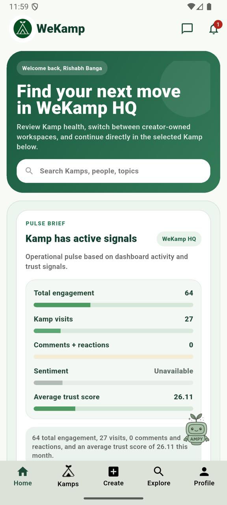

Run your Kamp with clarity and follow-through.
Manage Kamp health, roles, events, participation, and trust from one operating surface built for the people responsible for the outcome.
Built for cohort leads, program teams, accelerators, partner groups, and organizers who need more than a feed.

The work behind a healthy group is operational.
A group can have plenty of conversation and still lose the thread. Organizers need to know what is active, who owns the next move, which events are working, and where trust is building or slipping.
One operating layer for every Kamp.
Turn the invisible work of running a group into shared context, clear ownership, and useful signals.
Kamp health
See activity, visits, sentiment, and trust in context.
Broadcasts
Make the important next move visible to everyone.
Events + RSVPs
Run sessions with ownership, attendance, and follow-up.
Feed + Cards
Keep discussion connected to the Kamp and its work.
Roles + moderation
Assign responsibility and protect the operating rhythm.
Trust meter
Understand consistency before granting more responsibility.
Built for people responsible for outcomes.
Cohort operators
Keep a time-bound program on track across sessions, members, and follow-up.
Program teams
Give organizers shared visibility into participation, roles, and member health.
Accelerators + founder networks
Move from introductions and events to accountable next steps.
Partner-led Kamps
Run member programs with governance, context, and repeatable operations.
Operate the group. See the signal. Move the next thing.
One source of context
Bring posts, events, roles, and signals together.
Visible Kamp health
Know where attention and ownership are needed.
Reliable follow-through
Turn activity into the next useful action.
Trust is an operating signal.
WeKamp treats trust as a pattern of credibility, consistency, and constructive participation. Organizers get context for who is active, reliable, and ready for more responsibility.
From Kamp setup to a healthy operating rhythm.
Built for operator-led Kamps.
Same operating layer. Different operating context.
For program teams
Partner programs, academies, alumni groups, customer communities, and internal cohorts.
Design your operating layerFor community operators
Creator-led Kamps, interest groups, and invite-only circles that need structure as they grow.
Start a KampRun the work behind the group.
Start a Kamp, or talk to us about the operating layer behind your cohort, program, partner network, or member group.